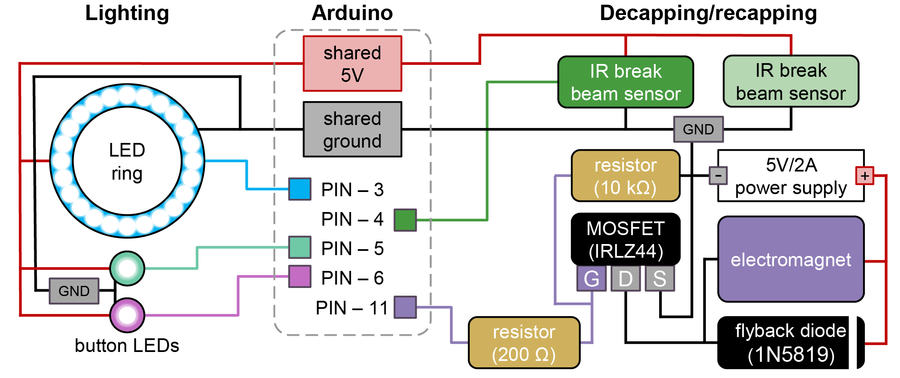

Build guide · CubXL+ / PANDA
Vial Capper / Decapper Build Guide
This page consolidates the current build, wiring, calibration, and validation notes for the PANDA vial capper / decapper. It covers the custom magnetic vial caps, the deck vial holder, the PAW-mounted electromagnet, the cap-presence line-break sensor, and the software checks that prove the mechanism works.
Source: documentation/vial-capper-decapper-build.md in the Cubware repository.
What The Mechanism Does
The decapper is a PAW tool that uses an electromagnet to pick up a custom vial cap, lift it off a vial, and later release it back onto the vial. The cap itself is 3D printed, filled with cured PDMS, and topped with a thin ferrous metal disc so the electromagnet can hold it.
For PANDA units with PANDA.version > 1.0, production capping/decapping code
checks a line-break sensor after each operation. A broken line means the cap is
being held by the decapper; an unbroken line means the cap is not present at the
decapper.
Standalone BOM
Quantities are for one PANDA vial capper / decapper station unless noted. The local PANDA BOM does not specify quantities for every PAW subcomponent, so rows marked "as needed" should be sized to the number of caps/vials or to the existing PAW build.
Purchased Parts
| Qty | Item | Use | Part number / spec | Source | Cost in repo |
|---|---|---|---|---|---|
| 1 | Electromagnet | Picks up the ferrous disc in the cap | uxcell 5V 50N; verify part number on listing | Amazon | Verify on listing |
| 1 | IR break beam sensor, 5 mm LEDs | Detects whether a cap is present on the decapper | Adafruit 2168 | Adafruit | USD 5.99 |
| 1 | Arduino Uno SMD R3 | Controls PAW peripherals, including the electromagnet and line-break sensor | A000073 | DigiKey | USD 26.30 |
| 1 | Uno R3 proto shield, generic | PAW control circuitry | HiLetgo Uno R3 ProtoShield with SYB-170 mini breadboard, 2-pack | Amazon | Verify on listing |
| 1 | MOSFET | Switches the electromagnet from the Arduino control signal | IRLZ44 | Amazon | USD 9.99 |
| 1 each | Resistors | Electromagnet circuit | 10 kOhm and 200 Ohm | Not specified | Not listed |
| 1 | Flyback diode | Protects the electromagnet circuit | 1N5819 | Amazon | USD 7.99 |
| 1 set | Jumper wires | Arduino/protoshield wiring | Female-female 4447, extension 4635, male-male 4482 | Adafruit 4447, Adafruit 4635, Adafruit 4482 | USD 9.95, USD 11.95, USD 9.95 |
| 1 | USB extension cable | Communication with PAW hardware | 10-15 ft USB extension, UPC 686878976212 | Amazon | USD 8.99 |
| 1 kit | M3-M6 bolt kit | Mounting hardware for PAW components | Kwokker M3-M6 bolt kit, 20 sizes | Amazon | USD 23.99 |
| As needed | 20 mL stock vials | Vials used with the custom magnetic caps | Fisher 12-100-112 | Fisher Sci | Not listed |
| 1 per cap | Adhesive-backed ferrous metal disc | Magnetic target on each custom cap | 25 mm diameter, 0.5 mm height | Amazon example | Not listed |
| About 2.6 mL per cap | PDMS base and crosslinker | Cured cap insert/seal | 10:1 base:crosslinker | Not specified | Not listed |
| Optional | Super glue | Secures ferrous disc if its adhesive is insufficient | Not specified | Not specified | Not listed |
Printed / Fabricated Parts
| Qty | Part | File | Notes |
|---|---|---|---|
| 1 per capped vial, plus spares | Custom 16 mm vial cap | 3D-prints/VialCap/VialCap16mm.step |
Print at 0.2 mm layer height; fill with PDMS and add ferrous disc |
| 1 | 20 mL vial holder | 3D-prints/DeckAccessories/9VialHolder20mL_TightFit.step |
Holds vials along the Y-axis |
| 2 | Vial holder pill pins | 3D-prints/DeckAccessories/9VialHolder20mL_TightFit - Pill.step |
Construction guide says two are needed to place the holder on the deck |
| 1 | PAW electromagnet mount | 3D-prints/PAW/PAW-V2 - ElectromagnetMount.step |
Mounts the electromagnet to the PAW |
| Existing PAW build | PAW body and neighboring tool mounts | 3D-prints/PAW/ |
The capper/decapper assumes the PAW is installed on the gantry |
The closest Cubware part pages are the vial decapper mount and 9-vial holder. The legacy PANDA build assets listed above came from the PANDA-BEAR documentation tree.
Fabricate The Custom Vial Caps
- Print
VialCap16mm.stepat 0.2 mm layer height using the default Bambu Studio profile. - If the recessed geometry prints poorly, reduce print speed by 25%.
- Mix PDMS at 10:1 base:crosslinker.
- Add about 2.6 mL of mixed PDMS to each cap. The cap has a slightly recessed interior fill line.
- Cure for at least 48 hours. Do not use caps while tacky.
- If the cap is still tacky after two days, rinse repeatedly with water until it is no longer tacky.
- Place a 25 mm diameter x 0.5 mm adhesive-backed ferrous metal disc into the cap's recessed top area.
- If the disc adhesive is not strong enough, secure it with super glue.
- Confirm the metal disc is flush with the cap top. No edge or section should protrude.
Use caps only for the same solution composition. Some solutions degrade caps faster than others, so confirm each cap can still be removed by hand before starting a campaign.
Install The Vial Holder
- Print the 20 mL vial holder and two pill pins from the deck accessory files listed above.
- Mount the vial holder on the deck with the pill pins.
- Place vials along the Y-axis. The construction guide says the first vial has the lowest Y value.
- Calibrate vial locations through the mill calibration menu. The current calibration code uses 33.0 mm spacing between vials in the Y-axis when recalculating a full holder from the first vial.
Build And Wire The Decapper
- Mount the electromagnet to the PAW using the PAW electromagnet mount from
3D-prints/PAW/. - Wire the electromagnet through the Arduino-controlled MOSFET circuit with a
flyback diode. The external firmware currently defines the electromagnet
output as PWM-capable Arduino Uno pin
11ininclude/Magnet.h. - Install the IR break beam sensor so a cap held by the decapper breaks the
beam. The external firmware currently defines the line-break sensor input as
Arduino Uno pin
4ininclude/LineBreak.h, enables the internal pullup, and treatsLOWas beam broken. - Connect the Arduino to the PANDA computer and set the serial port in the config.
The repository does not include exact electromagnet mounting dimensions in this checkout. The PANDA Arduino wiring guide points to the separate BU-KABlab/PANDA_Arduino firmware repository for firmware, schematics, pin assignments, and installation instructions.
Wiring Diagram
This diagram is copied from the PANDA Arduino wiring documentation and shows the Arduino control system used by the capper/decapper hardware.

Arduino Firmware Details
The external BU-KABlab/PANDA_Arduino repository currently describes itself as firmware for the PANDA Arduino and uses PlatformIO with:
board = unoframework = arduinoSERIAL_BAUD = 115200- Adafruit NeoPixel, ezButton, Adafruit Motor Shield V2, Adafruit PWM Servo Driver, AccelStepper, Adafruit BusIO, and TMC2209 dependencies
The firmware entry point src/pawduino_v2.1.cpp initializes the interface,
lights, magnet, line-break sensor, and pipette. It also calls
checkMagnetTimer() in the main loop. include/Magnet.h defines
MAGNET_TIMER_DURATION as 5 minutes, so the electromagnet should auto-off after
that duration if left energized.
The firmware's magnet module supports direct duty control, percent control,
full-on/full-off helpers, and grabCap(holdPct, grabMs), which uses a
full-power pickup burst and then drops to a hold duty. The local PANDA-BEAR
Python control path currently uses command 5 (CMD_EMAG_ON) through
no_cap() and command 6 (CMD_EMAG_OFF) through ALL_CAP().
Arduino Control Contract
Integration into CubOS is in progress.